Biography
Sir Paul McCartney is a key figure in contemporary culture as a singer, composer, poet, writer, artist, humanitarian, entrepreneur, and holder of more than 3 thousand copyrights. He is in the "Guinness Book of World Records" for most records sold, most #1s (shared), most covered song, "Yesterday" largest paid audience for a solo concert (350,000+ people, in 1989, in Brazil). He is considered one of the most successful entertainers of all time.
Childhood
He was born James Paul McCartney on June 18, 1942, in Liverpool General Hospital, where his mother, Mary Patricia (Mohin), was a medical nurse and midwife. His father, James "Jim" McCartney, was a cotton salesman and a pianist leading the Jim Mac's Jazz Band in Liverpool. He has Irish and English ancestry. Young McCartney was raised non-denominational. He studied music and art, and had a happy childhood with one younger brother, Michael. 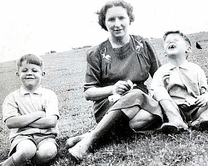 At age 11, he was one of only four students who passed the 11+ exam, known as "the scholarship" in Liverpool, and gained a place at Liverpool Institute for Boys. There he studied from 1953 to 1960, earning A level in English and Art.
At the age of 14, Paul McCartney was traumatized by his mother's sudden death from breast cancer. Shortly afterward, he wrote his first song. In July 1957 he met John Lennon during their performances at a local church fête (festival). McCartney impressed Lennon with his mastery of guitar and singing in a variety of styles. He soon joined Lennon's band, The Quarrymen, and eventually became founding member of The Beatles, with the addition of George Harrison and Pete Best. After a few gigs in Hamburg, Germany, the band returned to Liverpool and played regular gigs at the Cavern during 1961.
The Beatles Era
In November 1961, they invited Brian Epstein to be their manager, making a written agreement in January 1962. At that time McCartney and Harrison were under 21, so the paper wasn't technically legal, albeit it did not matter to them. What mattered was their genuine trust in Epstein. 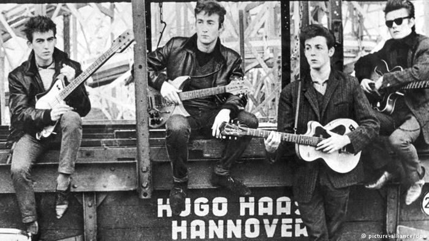 He improved their image, secured them a record deal with EMI, and replaced drummer Best with Ringo Starr. With a little help from Brian Epstein and George Martin, The Beatles consolidated their talents and mutual stimulation into beautiful teamwork, launching the most successful career in the history of entertainment.
The Beatles contributed to music, film, literature, art, and fashion, made a continuous impact on entertainment, popular culture and the lifestyle of several generations. Music became their ticket to ride around the world. Beatlemania never really ended since its initiation; it became a movable feast in many hearts and minds, a sweet memory of youth, when all you need is love and a little help from a friend to be happy. 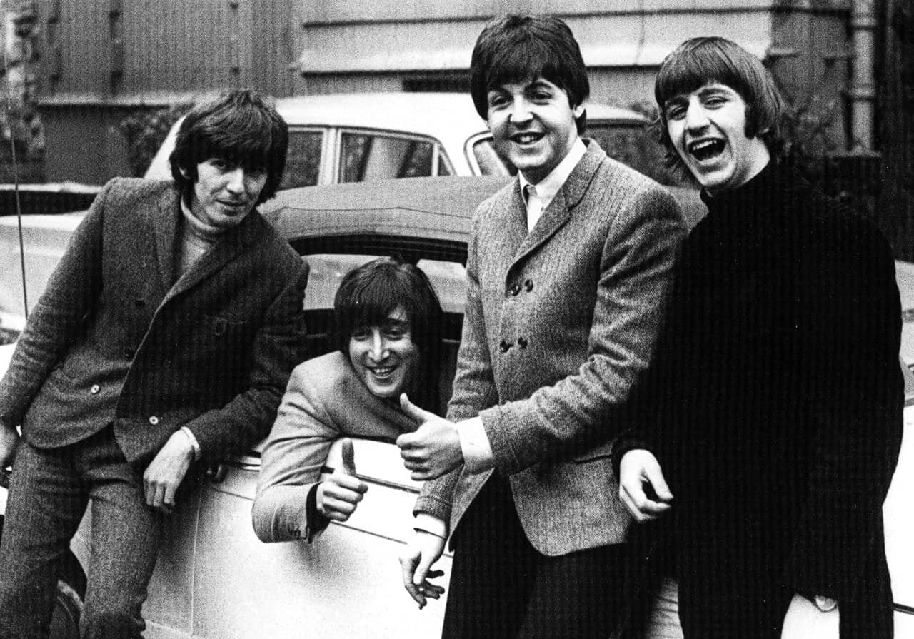Their songs and images carrying powerful ideas of love, peace, help, and imagination evoked creativity and liberation that outperformed the rusty Soviet propaganda and contributed to breaking walls in the minds of millions, thus making impact on human history.
All four members of The Beatles were charismatic and individually talented artists, they sparked each other from the beginning. Paul McCartney had the privilege of a better musical education, having studied classical piano and guitar in his childhood. He progressed as a lead vocalist and multi-instrumentalist, as well as a singer-songwriter. In addition to singing and songwriting, Paul McCartney played bass guitar, acoustic and electric guitars, piano and keyboards, as well as over 40 other musical instruments.
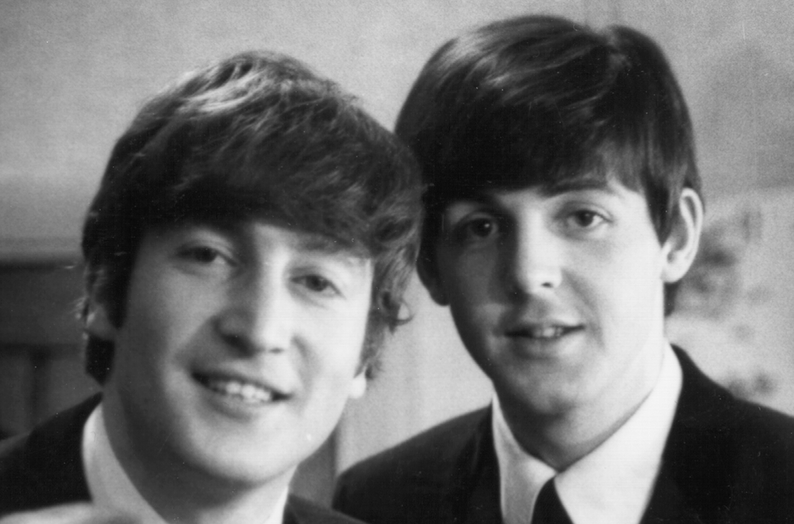McCartney wrote more popular hits for the Beatles than other members of the band. His songs Yesterday, Let It Be, Hey Jude, Blackbird, All My Loving, Eleanor Rigby, Birthday, I Saw Her Standing There, I Will, Get Back, Carry That Weight, P.S. I Love You, Things We Said Today, "Hello, Goodbye", Two of Us, Why Don't We Do It in the Road?, Helter Skelter, Honey Pie, When I'm 64, Lady Madonna, She's a Woman, Maxwell's Silver Hammer, "Ob-La-Di, Ob-La-Da," Mother Nature's Son, Long And Winding Road, Rocky Raccoon, Sgt. Pepper's Lonely Hearts Club Band, The Fool on the Hill, You Never Give Me Your Money, Your Mother Should Know, The End, Yellow Submarine, and many others are among the Beatles' best hits. Yesterday is considered the most covered song in history with over three thousand versions of it recorded by various artists across the universe.
Since he was a teenager, McCartney honored the agreement that was offered by John Lennon in 1957, about the 50/50 authorship of every song written by either one of them. However, both were teenagers, and technically, being under 21, their oral agreement had no legal power. Still, almost 200 songs by The Beatles are formally credited to both names, regardless of the fact that most of the songs were written individually. 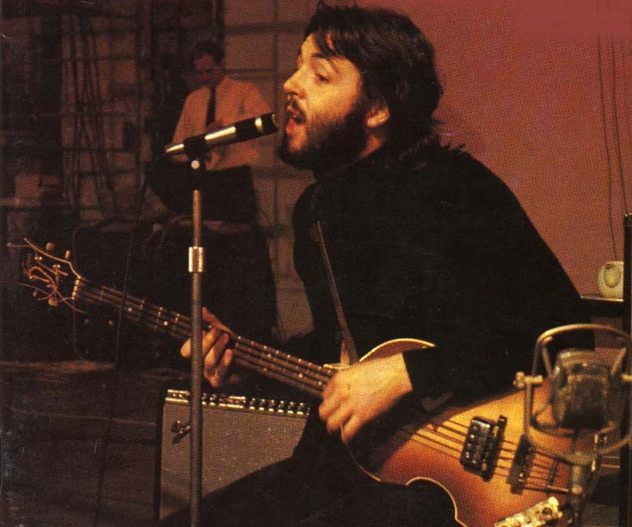The songwriting partnership of John Lennon and Paul McCartney was really working until the mid-60s, when they collaborated in many of their early songs. Their jamming on a piano together led to creation of their first best-selling hit 'I Want to Hold Your Hand' in 1963.
In total, The Beatles created over 240 songs, they recorded many singles and albums, made several films and TV shows. Thousands of memorable pictures popularized their image. In their evolution from beginners to the leaders of entertainment, they learned from many world cultures, absorbed from various styles, and created their own. McCartney's own range of interests spanned from classical music and English folk ballads to Indian raga and other Oriental cultures, and later expanded into psychedelic experiments and classical-sounding compositions. His creative search has been covering a range of styles from jazz and rock to symphonies and choral music, and to cosmopolitan cross-cultural and cross-genre compositions.
Epstein's 1967 death hurt all four members of The Beatles, as they lost their creative manager. Evolution of each member's creativity and musicianship also led to individual career ambitions, however, their legacy as The Beatles remained the main driving force in their individual careers ever since. 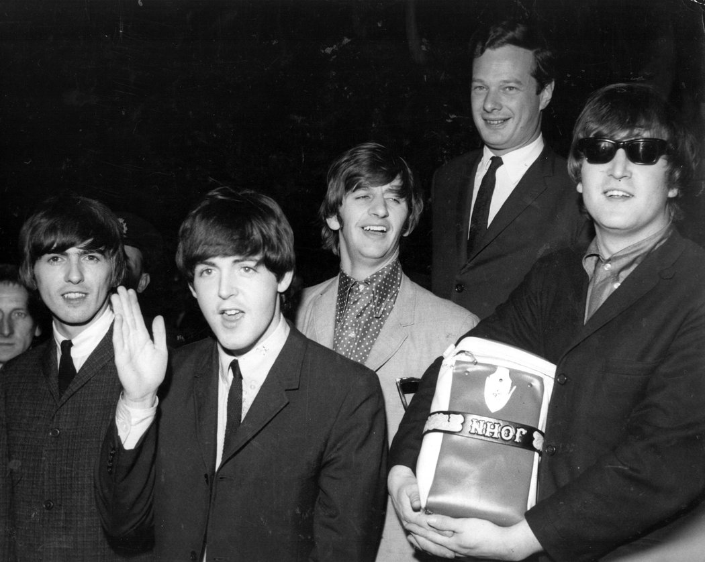McCartney and The Beatles made impact on human history, because their influence has been liberating for generations of nowhere men living in misery beyond the Iron Curtain.
Something in their songs and images appealed to everybody who wanted to become free as a bird. Their songs carrying powerful ideas of real love, peace, help, imagination and freedom evoked creativity and contributed to breaking chains and walls in the minds of millions. The Beatles expressed themselves in beautiful and liberating words of love, happiness, freedom, and revolution, and carried those messages to people across the universe. Their songs and images helped many freedom-loving people to come together for revolutions in Prague and Warsaw, Beijing and Bucharest, Berlin and Moscow. The Beatles has been an inspiration for those who take the long and winding road to freedom.
Solo Career
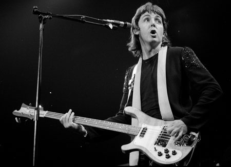 McCartney was 28 when he started his solo career, and formed his new band, Wings. His first solo album, "McCartney," was a #1 hit and spawned the evergreen ballad "Maybe I'm Amazed", yet critical reaction was mixed. He continued to release music with Wings, that eventually became one of the most commercially successful groups of the 70s. "Band on the Run" won two Grammy Awards and remained the Wings' most lauded work. The 1977 release "Mull of Kintyre" stayed at #1 in the UK for nine weeks, and was highest selling single in the UK for seven years. In 1978 McCartney's theme "Rockestra" won him another Grammy Award. In 1979, together with Elvis Costello, he organized Concerts for the People of Kampuchea. In 1979, McCartney released his solo album "Wonderful Christmastime" which remained popular ever since.
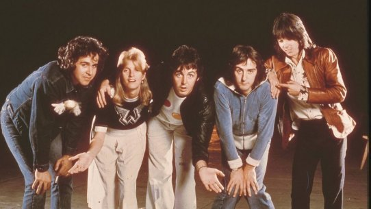In 1980 McCartney was arrested in Tokyo, Japan, for marijuana possession, and after a ten-day stint in jail, he was released to a media firestorm. He retreated into seclusion after the arrest, and was comforted by his wife Linda. Yet he had another traumatic experience when his ex-band-mate, John Lennon, was shot dead by a crazed fan near his home in New York City on December 8, 1980. McCartney did not play any live concerts for some time because he was nervous that he would be "the next" to be murdered.
After almost a year of absence from the music scene, McCartney returned in 1982 with the album "Tug of War," which was well received by public and enjoyed great critical acclaim. >He continued a successful career as a solo artist, collaborated with wife Linda McCartney, and writers such as Elvis Costello. During the 80s, McCartney released such hits as 'No More Lonely Nights' and his first compilation, "All the Best." In 1989, he started his first concert tour since the John Lennon's murder.
In 1994, the three surviving members of The Beatles, McCartney, Harrison, and Starr, reunited and produced Lennon's previously unknown song "Free as a Bird". 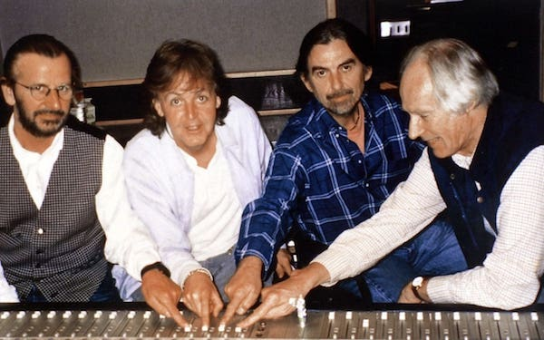It was preserved by Yoko Ono on a tape recording made by Lennon in 1977. The song was re-arranged and re-mixed by George Martin at the Abbey Road Studios with the voices of three surviving members. The Beatles Anthology TV documentary series was watched by 420 million people in 1995.
During the 1990s McCartney concentrated on composing classical works for the Royal Liverpool Philharmonic Society, such as "The Liverpool Oratorio" involving a choir and symphony, and "A Leaf" solo-piano project, both released in 1995. That same year he was working on a new pop album, "Flaming Pie," when his wife Linda was diagnosed with breast cancer, and caring for his wife during her illness meant only sporadic public appearances during that time. The album was released in 1997 to both critical and commercial success, debuting at #2 on both the UK and US pop charts. That same year he was knighted by Queen Elizabeth II as Sir Paul McCartney for his services to music.
Personal Life
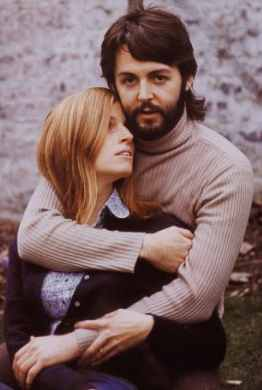In April 1998, Linda McCartney, his beloved wife of almost 30 years, mother of their four children, and his steady partner in music, died of breast cancer. McCartney suffered from a severe depression and undergone medical treatment. He spent much of the next year away from the public eye, emerging only to campaign on behalf of his late wife for animal rights and vegetarian causes. He eventually returned to the studio, releasing an album of rock n'roll covers in 1999. "Run Devil Run" made both Entertainment Weekly and USA Today's year-end top ten lists. McCartney also slowly returned to the public spotlight with the release of his another classical album, "Working Classical" in November 1999, in recording by the London Symphony Orchestra. His 2000 release "A Garland for Linda" was a choral tribute album, which raised funds to aid cancer survivors.
In 2000 he was invited by Heather Mills, a disabled ex-model, to her 32nd birthday. McCartney wrote songs dedicated to her, he and Mills developed a romantic relationship and became engaged in 2001. However, the year brought him a cascade of traumatic experiences. On September 11, 2001, Paul McCartney was sitting on a plane in New York when the World Trade Center tragedy occurred in front of his eyes, and he was able to witness the events from his seat. Yet there was another sadness, as his former band-mate George Harrison died of cancer in November, 2001.
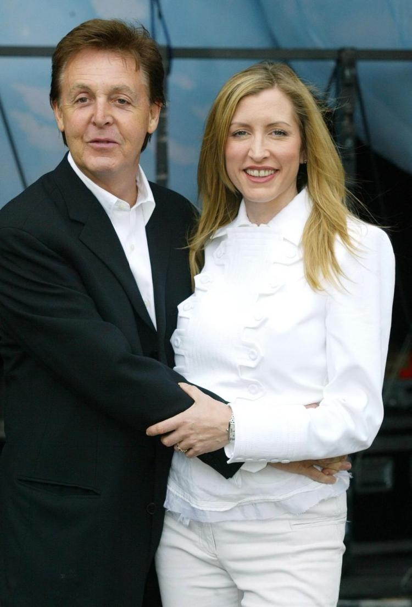Recouperating from the stressful year, McCartney received the 2002 Academy Award-nomination for the title song to the movie Vanilla Sky (2001), and also went on his first concert tour in several years. In June, 2002, Sir Paul McCartney and Heather Mills married in a castle in Monaghan, Ireland. Their daughter, Beatrice Milly McCartney, was born in October 2003. Four years later, the high profile marriage ended in divorce, after a widely publicized litigation. "Whenever you're going through difficult times, I'm at the moment, it's really cool to be able to escape into music" says Paul McCartney.
In 2003 Paul McCartney rocked the Red Square in Moscow with his show "Back in USSR" which was attended by his former opponents from the former Soviet KGB, including the Russian president Vladimir Putin himself, who invited McCartney to be the guest of honor in the Kremlin. In 2004 Paul McCartney received a birthday present from the Russian president. In June 2004, he and Heather Mills-McCartney stayed as special guests at suburban Royal Palaces of Russian Tsars in St. Petersburg, Russia. There he staged a spectacular show near the Tsar's Winter Palace in St. Petersburg where the Communist Revolution took place, just imagine. In 2005 the Entertainment magazine poll named The Beatles the most iconic entertainers of the 20th Century. In 2006, the guitar on which Paul McCartney played his first chords and impressed John Lennon, was sold at an auction for over $600,000.
On June 18, 2006, Paul McCartney celebrated his 64th birthday, as in his song "when I'm Sixty-Four." McCartney's celebrity status, made it a cultural milestone for a generation of those born in the baby-boom era who grew up with the music of The Beatles during the 1960s. The prophetic message in the song has been intertwined with McCartney's personal life and his career. In 2007 McCartney left his longtime label, EMI, and signed with Los Angeles based Hear Music. He learned to play mandolin to create a refreshing feeling for his latest album "Memory Almost Full," then appeared in Apple Computer's commercial for iPod+iTunes to promote the album. In June 2007 McCartney appeared together with Ringo Starr, Yoko Ono, Olivia Harrison and Guy Laliberté in a live broadcast from the "Revolution" Lounge at the Mirage Hotel and Casino in Las Vegas.
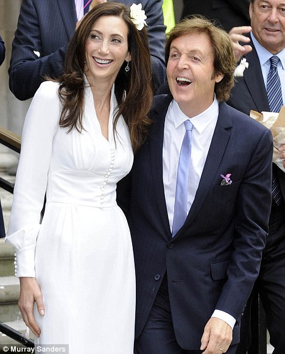His 3-DVD set "The McCartney Years" with over 40 music videos and hours of Historic Live Performances was released in November 2007. His classical album "Ecco Cor Meum" (aka.. Behold My Heart), recorded with the Academy of St. Martin of the Fields and the boys of King's college Choir, was voted Classical Album of the Year in 2007. That same year, Paul McCartney began dating Nancy Shevell. The couple married in 2011, in London. Sir Paul's "On the Run Tour" once again took him flying across world from July through December 2011 giving sold out concerts in the USA, Canada, UK, United Arab Emirates, Italy, France, Germany, Sweden, Finland and Russia.
In July 2012, Paul McCartney rocked the opening ceremony of the 2012 Summer Olympics in London. He delivered a live performance of The Beatles's timeless hit "Hey Jude" and engaged the crowd of people from all over the world to join his band in a sing along finale. The show was seen by a live audience of close to 80000 people at the Olympic Park Stadium in addition to an estimated TV audience of two billion people worldwide.
On the long and winding road of his life and career, Sir Paul McCartney has been a highly respected entertainer and internationally regarded public figure.
Font: IMDb Mini Biography By: Steve Shelokhonov with slightly modifications made by Rakky Curvelo.